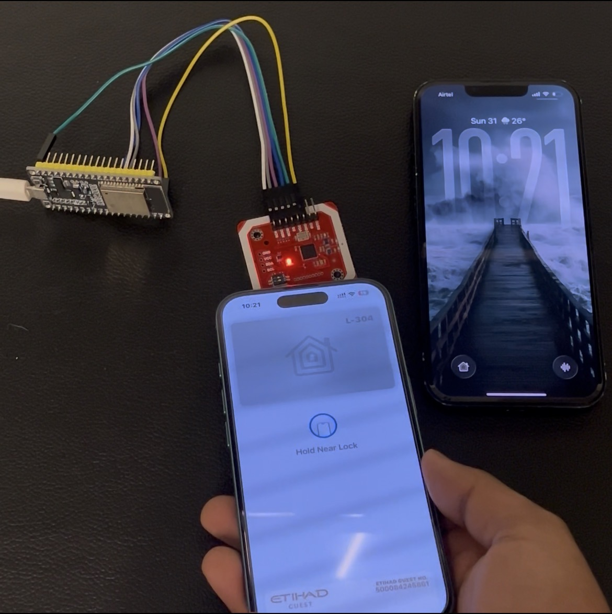
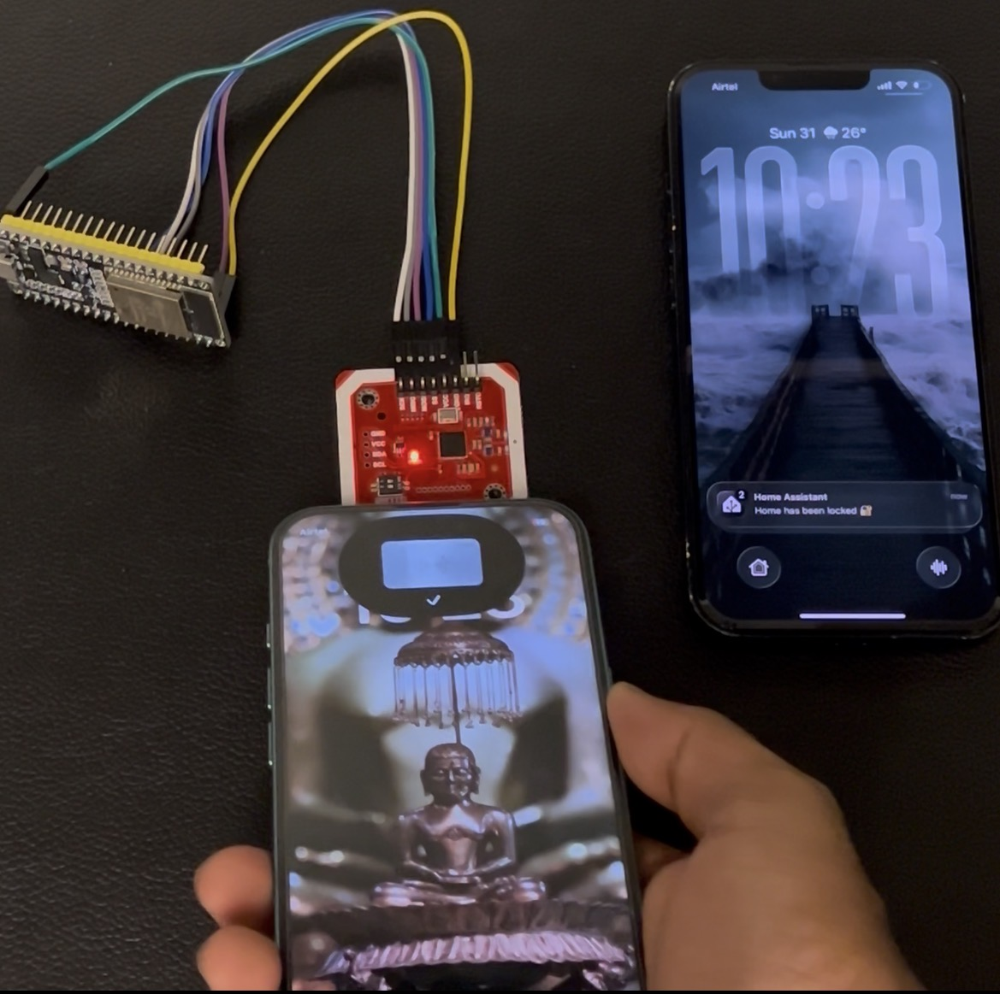
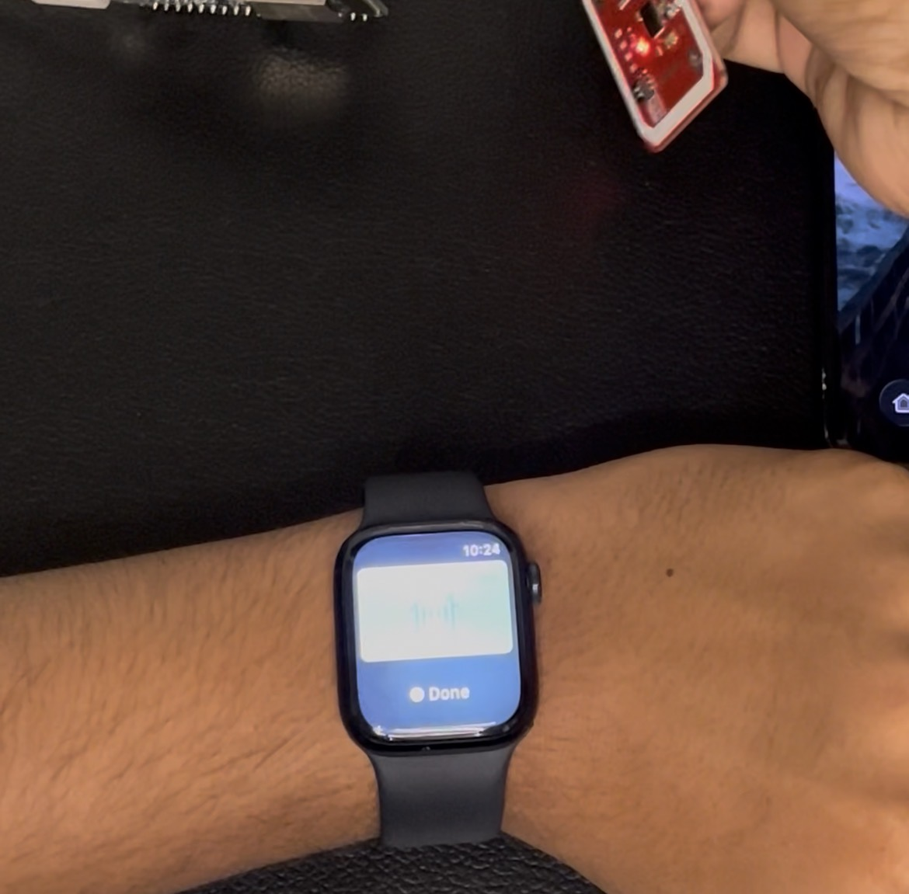

Apple HomeKey Protocol Emulator






About this Project
This project replicates Apple’s HomeKey protocol for smart locks using ESP32 and NFC technology. It allows secure access management and demonstrates practical expertise in IoT, embedded systems, and security protocols.
Key highlights include NFC authentication, ESP32-based control, and smooth integration with smart lock hardware.